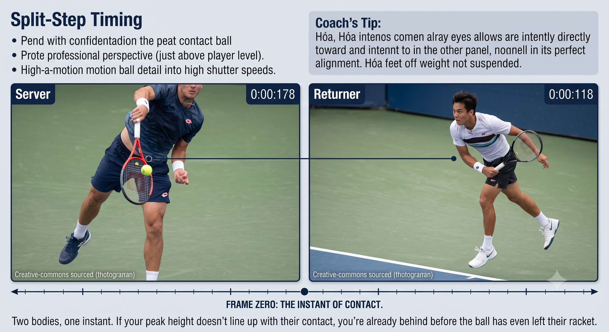
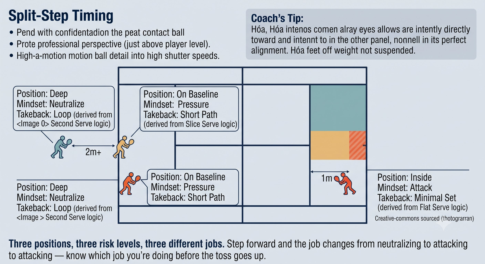

Chương 23: Đỡ Giao Bóng
(Bản dịch tiếng Việt của Chapter 23 trong Sổ Tay Quần Vợt Thống Nhất)
Nghệ Thuật Phản Ứng (The Reactive Art)
Không có thời gian để suy nghĩ. Một cú chuẩn bị ngắn, Hóa Kình, chặn và chuyển hướng. Quiet Eye là tất cả.
Đỡ Giao Bóng Không Phải Là Groundstroke
Đỡ giao bóng là cú đánh duy nhất mà bạn hoàn toàn không kiểm soát được bóng đến. Bạn phải phản ứng, không phải chủ động. Chuẩn bị ngắn, Hóa Kình, chặn và chuyển hướng.

Hình 23.1
— Henry Phạm
Đây là các khác biệt chính so với một groundstroke:
QUY TẮC: Đỡ giao bóng nghĩa là mượn tốc độ. Cú chuẩn bị ngắn. Mặt vợt vững. Hóa Kình — hấp thu và chuyển hướng.
Bản Đồ Đỡ Giao Bóng Q-V-ROOT-8-45-Impulse
Thời Điểm Split Step: Khoảnh Khắc Quyết Định
– Split step hạ cánh đúng lúc đối thủ tiếp xúc bóng — không trước, không sau.

Hình 23.2
– Trong không khí, bạn là một đôi Hư. Hạ cánh là tức thì Thực trên chân đúng.
– Hạ cánh muộn nghĩa là bạn muộn. Hạ cánh sớm nghĩa là bạn mất năng lượng đàn hồi.
– Quiet Eye khởi động tại điểm tiếp xúc của đối thủ. Mắt bạn đỗ tại vùng tiếp xúc của mình ngay khi họ đánh.
Mẹo Huấn Luyện
Quay split step của bạn ở 240 khung hình mỗi giây. Khung hình số không là lúc đối thủ tiếp xúc. Lúc đó bạn nên ở đỉnh cao nhất. Hạ cánh là động tác đầu tiên của bạn. Nếu bạn vẫn đang lên khi đối thủ tiếp xúc, bạn đã muộn.
Cú Chuẩn Bị: Từ Không Đến Ngắn
NGUYÊN LÝ: Giao bóng càng nhanh, cú chuẩn bị càng NGẮN. Bạn đang chuyển hướng, không phải tạo ra lực.
Hóa Kình Khi Đỡ Giao Bóng: Hấp Thu và Chuyển Hướng
– Hóa Kình nghĩa là bạn không thêm lực — bạn chuyển hóa tốc độ của đối thủ.
– Cổ tay giữ vững (4 đến 5 trên 10) ngay từ đầu. Cổ tay lỏng trên một cú giao bóng nhanh nghĩa là mặt vợt rung, nghĩa là đánh trượt (shank).
– Tiếp xúc vẫn ở phía trước. Tiếp xúc muộn nghĩa là bạn đang chống lại tốc độ thay vì chuyển hóa nó.
– Góc mặt vợt hướng đến mục tiêu. Để bóng nảy lại. Không cần vung trên 200+ km/h.

Hình 23.3
Chiến Lược Đỡ Giao Bóng Theo Vị Trí Sân
Tín Hiệu Lỗi
Bài Tập
1. Thời điểm split step: đối tác giao bóng. Bạn hô "TIẾP XÚC" khi đối thủ đánh, "HẠ CÁNH" khi bạn xuống. 20 lần.
2. Không chuẩn bị: đối tác đánh giao bóng phẳng nhanh. Bạn xoay người, đặt mặt vợt, và đóng băng cây vợt. Chỉ chặn. Cảm nhận Hóa Kình. 20 lần.
3. Chỉ mắt: đỡ giao bóng với mắt chỉ trên vùng tiếp xúc. Đối tác gọi "bóng" ngay khi bạn lén nhìn. 20 lần.

Hình 23.4
4. Cú xung 1-inch: bài tập với tường — đứng cách tường 1 mét, vô-lê hoặc chặn với một cú xung 1-inch. Cảm nhận phanh, rồi xung.
ĐỐI THỦ TIẾP XÚC. MẮT ĐỖ. SPLIT HẠ CÁNH. MẶT ĐẶT. XUNG 1-INCH.
Danh Sách Kiểm Tra Đỡ Giao Bóng
– Split step hạ cánh đúng lúc đối thủ tiếp xúc.
– Mắt nhảy đến vùng tiếp xúc của bạn ngay khi đối thủ đánh.
– Cú chuẩn bị: không đến ngắn. Giao bóng càng nhanh, càng ngắn.

Hình 23.5
– Mặt vợt: vững ngay từ đầu, cổ tay 4 đến 5 trên 10, góc hướng đến mục tiêu.
– Tiếp xúc: phía trước. Để bóng nảy lại. Không vung.
– Phanh: chân trước dừng cứng, xung 1-inch.
– Nếu đánh trượt, mắt bạn đã động. Nếu dài, mặt vợt mở hoặc muộn. Nếu vào lưới, mặt vợt khép hoặc cú chuẩn bị quá lớn.
Chương Này Dẫn Đến Đâu
Chương này tích hợp Q-V-ROOT-8-45-Impulse-Kình vào cú đỡ giao bóng. Chương 24 bao quát vô-lê và cú đập. Chương 25 bao quát slice, drop shot, và lob.